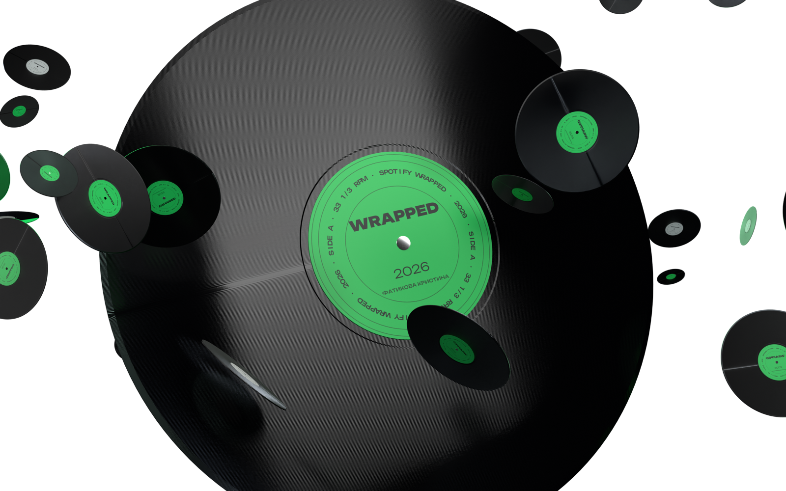
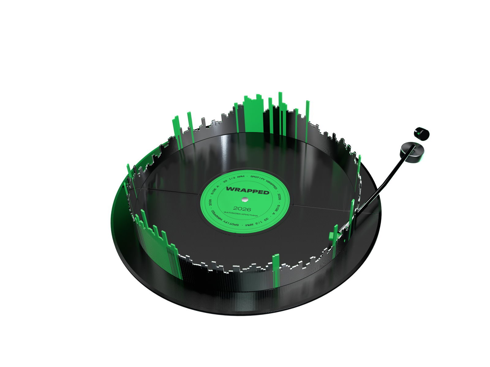
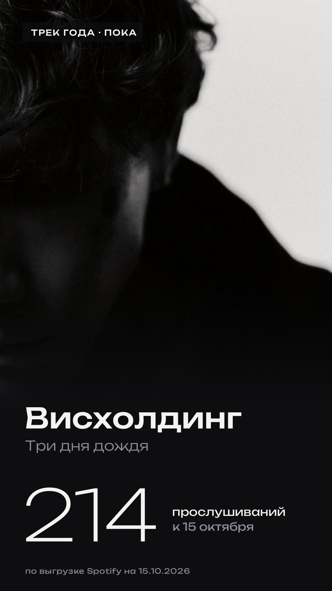
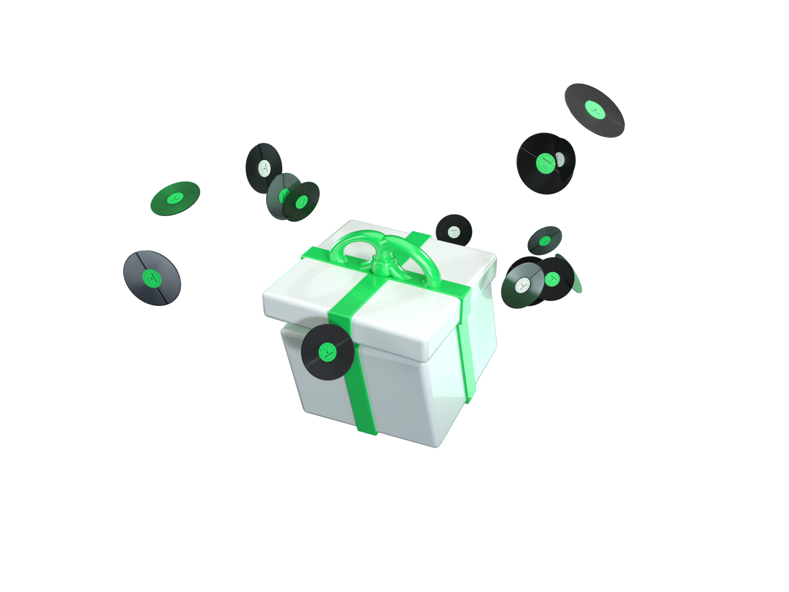
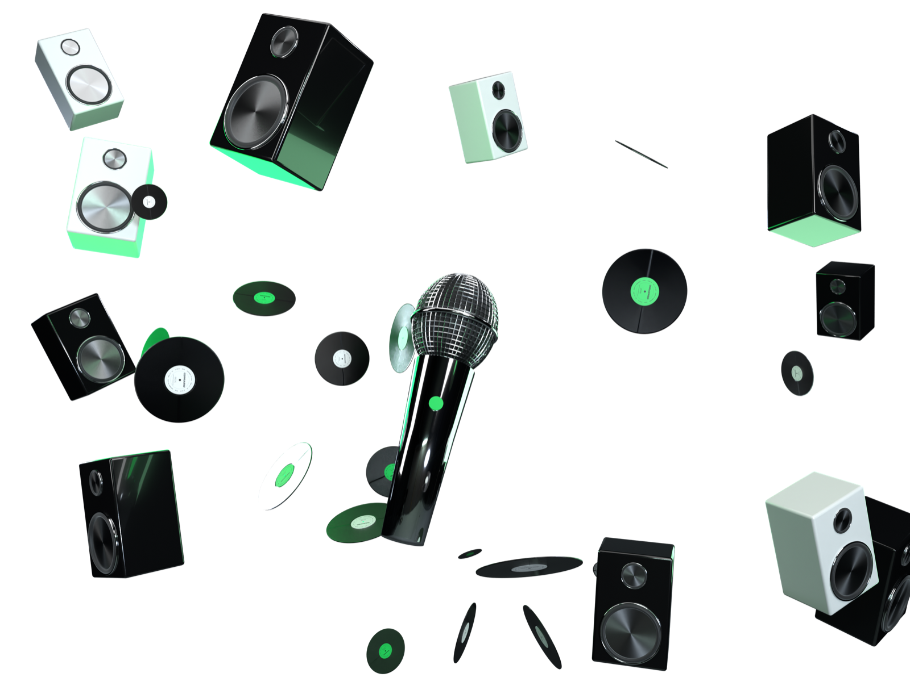
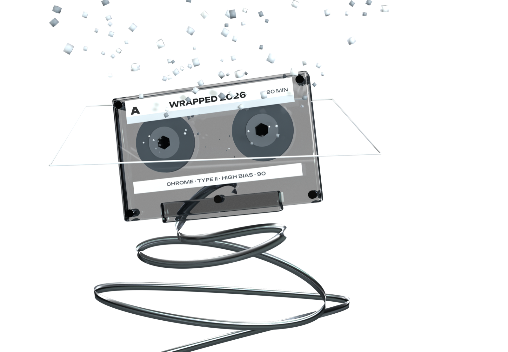

Фатикова Кристина
2026
SPOTIFY
WRAPPED
Как музыка превращается
в историю года
Листайте вниз ↓
В апреле я неделю слушала только «Три дня дождя», и каждое утро начиналось с «Висхолдинга». Spotify записал это как высокий столбик. Он ведёт за меня дневник: помнит, что звучало, но не знает почему. Здесь я сверяю его записи со своей памятью.
01
Вступление / 299 дней

299
дней
Мой 2026 по дням · до 26 октября
130
16.04
292/299
минут в среднем в день
пик — 350 минут
дней с музыкой
01
02
03
04
Музыкальный дневник
Отмеченные участки — недели, которые выделяются на графике. Три я помню, одну — нет. Угадайте, что стоит за июльским пиком, а потом откройте мой рассказ.
01
02
03
04
20–28 февраля
14–20 апреля
10–24 июля
1–12 сентября
Без трека
Висхолдинг — Три дня дождя
моменты — zhanulka, Какая Разница
How to Save a Life — The Fray
Здесь я много слушала музыку, но уже не помню почему. Эту неделю статистика запомнила лучше, чем я.
Послушала альбом любимой группы целиком и неделю не включала ничего другого. С «Висхолдинга» начинался каждый день.
Поездка к морю с подругами. Мы ставили эту песню в машине каждый вечер, и теперь она звучит как лето и дорога.
Начало учёбы. Включала её по дороге на первые пары: спокойный ритм помогал собраться и не нервничать.
Как думаете, что стояло за этим пиком? Нажмите, чтобы открыть воспоминание
Данные: моя выгрузка истории прослушиваний Spotify от 27 октября 2026, период 1 января — 26 октября (299 дней). Столбик — один день, высота — минуты музыки. Зелёные — самые плотные дни, линия — среднее за неделю. Остаток года пуст: он ещё не прошёл.
02
История формата
Как всёначиналось?
В 2015 году Spotify впервые показал пользователям персональные итоги прослушиваний. Уже в 2016 появился Spotify Wrapped. Постепенно обычная статистика превратилась в яркую интерактивную историю и ежегодное событие, которого пользователи ждут каждый декабрь.
2015
2015 первые итоги
Первые персональные итоги — пока просто статистика.
2016
2016 Spotify Wrapped
Итоги получают свой формат и имя.
сегодня
→ сегодня ежегодное событие
Ежегодное событие эпохи стриминга.
03
Мой трек года
Что Spotifyсообщил мне
Вот что Spotify знает о моём главном треке на 26 октября. Ниже — его цифра, мой комментарий и сам трек: его можно послушать.
Мой трек года · пока
Spotify — мне

«„Висхолдинг“ звучал у тебя 214 раз»
— по моей выгрузке Spotify на 26 октября 2026
Мой комментарий
«Три дня дождя» — моя любимая группа, а «Висхолдинг» — моя любимая их песня. Когда она начинает играть, мне по-настоящему хорошо: всё, что раздражало, отходит на второй план, и день становится легче. Я включала её снова и снова, потому что с ней всё вокруг становится лучше.
На что обратить внимание
Послушайте, с каким настроением звучит песня: мне с ней всегда хочется сделать звук громче. Без входа в Spotify плеер играет 30-секундный фрагмент, с аккаунтом — песню целиком. История выше понятна и без звука.
После прослушивания
Spotify насчитал 214 прослушиваний, но это не 214 разных моментов. Почти сотня пришлась на одну апрельскую неделю: альбом по кругу, дорога на учёбу и обратно. Остальные повторы я по отдельности не вспомню. Счётчик хранит их все, а я — только ту неделю.
Пластинка крутится, только пока играет трек
Мой топ-5 на 26 октября
Висхолдинг — Три дня дождя
01
214×
Счётчик знает, сколько раз. Почему — помню только я, и то не всегда.
How to Save a Life — The Fray
02
188×
моменты — zhanulka, Какая Разница
03
151×
Copines — Aya Nakamura
04
129×
Человечки — STERVELL, VSEMOJNO
05
117×
04
Визуальный язык
Чтопревращаетцифрыв историю?
Сами по себе минуты, проценты и списки артистов выглядят как обычная статистика. Wrapped превращает их в яркие карточки с крупной типографикой, графикой, цветом и движением. Благодаря дизайну цифры становятся частью визуальной истории.
ДО: СТАТИСТИКА
ПОСЛЕ: ИСТОРИЯ
38 874
минуты музыки
до 26 октября
«Висхолдинг» — 214 прослушиваний за 299 дней
Минуты
38 874
Топ-трек
Висхолдинг
Прослушивания
214
Топ-артист
Три дня дождя
Артисты
270
→↓
Дни с музыкой
292
Те же шесть строк. Цвет, типографика, графика и движение превращают их в кадр, который хочется досмотреть.
05
Последовательность
Как цифрыстановятсяисторией?
Wrapped не показывает всю статистику сразу. Сначала он знакомит слушателя с итогами, затем раскрывает любимые треки и артистов, добавляет неожиданные факты и только потом показывает финальный результат. Каждый экран продолжает предыдущий и создаёт желание листать дальше.
Wrapped 2026 выйдет только в декабре. Ниже — мой макет его пяти экранов на данных к 26 октября, в голосе Spotify: «у тебя», «ты». Чего нет в выгрузке, я помечаю как предположение.
01 / 05
Spotify — мне: мой год
38 874
минут музыки
02 / 05
Spotify — мне: трек года
214×
«„Висхолдинг“ — Три дня дождя. Столько раз он звучал у тебя с января по октябрь»
03 / 05
Spotify — мне: артист года
51 ч
«С группой „Три дня дождя“ — больше, чем с любым другим артистом»
04 / 05
Предположение: неожиданный факт
~1%
«Похоже, ты в 1% самых преданных слушателей группы „Три дня дождя“»
05 / 05
Spotify — мне: итог
«Твой 2026пока»
38 874
минут
1 042
трека
270
артистов
292
дня с музыкой
214×
Висхолдинг
~1%
Три дня дождя

06
Делимся
Почему мыделимсяWrapped?
Музыкальные итоги становятся простым способом рассказать о себе другим. Любимый артист, главный трек года или попадание в 1% слушателей воспринимаются как что-то личное. А готовый визуальный формат позволяет сразу поделиться результатом в соцсетях.

Из всех цифр я бы поделилась одной: 214 раз «Висхолдинг». Почти сотня — одна апрельская неделя и дорога на учёбу. В карточку это не попадёт, поэтому пишу здесь.
МОЙ 2026
МОЙ 2026
МОЙ 2026
214×
Висхолдинг
МОЙ 2026
МОЙ 2026
МОЙ 2026
МОЙ 2026
07
Пределы данных
Алгоритмзнает не всё
Wrapped знает, что и сколько мы слушали, но не понимает, почему мы включали конкретную музыку. Случайный трек, музыка для учёбы или песня на повторе одинаково становятся частью статистики. Поэтому алгоритм показывает лишь одну версию нашего музыкального года.
ДАННЫЕ
≠

Алгоритм забирает из кассеты данные — пиксели поднимаются и уходят. Плёнка остаётся у меня: это и есть память.
08
Финал
Личный итог
Представьте жизнь кассетой на девяносто минут, где минута — год. Кассета хранит запись, а магнитофон даёт ей звучать, как тело, через которое я слышу музыку сейчас. Мой 2026 — одна минута на этой плёнке, и почти вся она — «Три дня дождя». Когда-нибудь магнитофон остановится, а запись останется для других.
Ваша очередь
Ваш любимый трек
Какую запись вы бы оставили на своей кассете? Напишите исполнителя, трек и воспоминание, которое с ним связано. Карточку можно сохранить.
АВТОР
ТЕМА
ГАРНИТУРЫ
3D
ДАННЫЕ
Фатикова Кристина
Spotify Wrapped:
как музыка превращается
в историю года
Unbounded — цифры и заголовки
Onest — текст
Blender / Cycles
музыкальные предметы — модели .glb
Выгрузка Spotify
за 1 января — 26 октября 2026.
ПАМЯТЬ